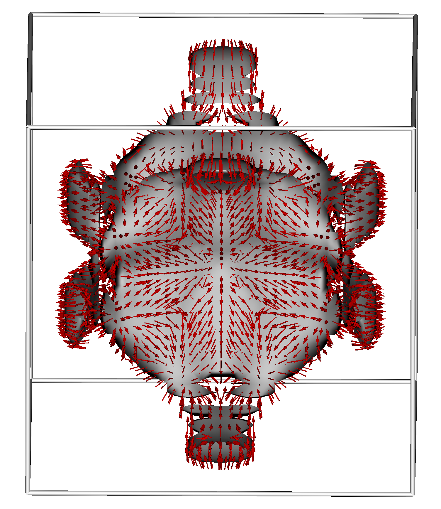

Home
This is a simple website describing me

Research
Summary of my research
Project 1
Search for spin selectivity in non-chiral materials was my BSc thesis project under supervision of prof. Slawinska and prof. van Wees. I continued working on the project after graduation which culminated in a joined publication with the Slawinska group. My role was to use the findings from Carlos Mera Acosta et al. to predict the form of spin selectivity in non-chiral space groups which have chiral symmetry as specific k-points – teaching me the importance of Group theory in materials science. I then chose a material from one of the space groups to calculate in DFT the current induced spin accumulation – teaching me how to perform DFT calculation on computer clusters. I rationalized the emergence of spin selectivity based on the spin texture – teaching me about spin dynamics.
Project 2
First-principles simulations of hybrid layered perovskite phases utilizing symmetry-adapted phonon modes was my MSc thesis done at MSE Cornell under supervision of prof. Benedek. I predicted the possible structures of ammonium containing Dion-Jacobson perovskite. In comparison to other alkaline cation-containing D-J phases, I rationalized the preference of certain structures and distortions based on the size and coordination environment of the ammonium cation. This experience is the reason why I am confident I can perform theoretical research at the graduate level. Although I had all the support necessary, the hypothesis was vague, and the research goals shifted as I continued the work. It thought me about persistence and the value of curiosity.
Project 3
Development of new surrogate models for Bayesian optimization of material properties was my internship at prof. Zhang’s group at TMM-TU Darmstadt. This was an interdisciplinary project connecting material simulations with deep learning methods. I developed a surrogate model based on a probabilistic Bayesian neural network which was tested according to the methods of Yee-Fun Lim et al. My model drastically outperformed all other surrogate models at initial acquisition of a high-dimensional descriptor space. I continued the testing of the framework using different methods and on other dataset which showed less performance. This sprouted my interest in alternative machine learning methods.
Interests outside of physics
Hobbies
Details about my hobbies.
Travel
Details about places I've traveled to.
Education background
Overview of my journey through the education system.
Gymnasium
Details about my initial High-school experience
A-levels
UK, redhill
Bachelor
Netherlands
Masters
Germany, Belgium, US